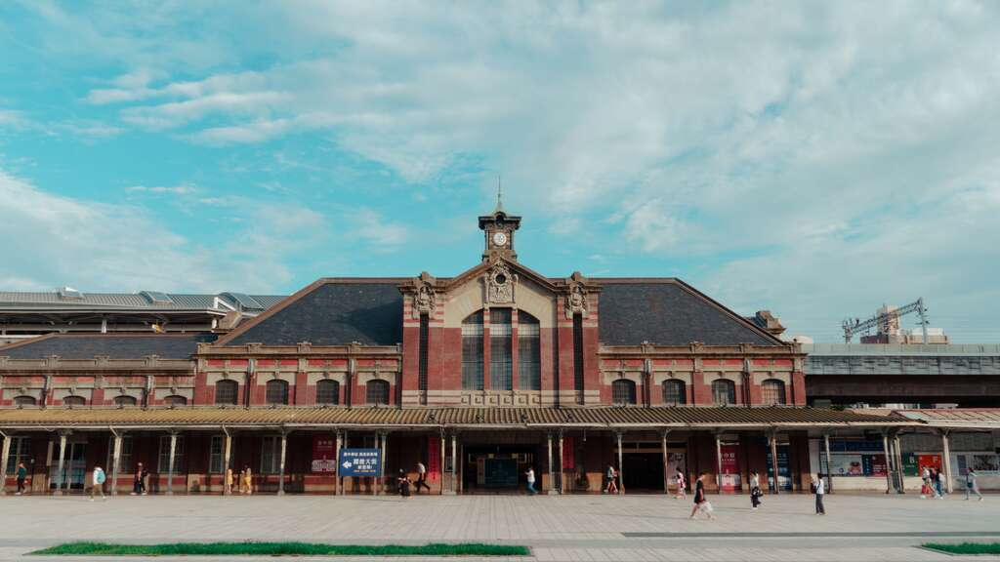

一、園區簡介與歷史沿革
台中驛鐵道文化園區位於台中市中心中區，是以國定古蹟「舊臺中火車站」為核心所打造的鐵道文化保存與休閒空間。 自 1905 年第一代木造車站設立、1908 年西部縱貫鐵路於台中舉行全線通車典禮以來，這裡一直是中台灣最重要的交通門戶， 不僅帶動了台中城區的現代化棋盤式街廓發展，更承載了超過一個世紀的南來北往旅人記憶。
目前園區內最受矚目的歷史建築，是於 1917 年（大正 6 年）落成的第二代車站本體「臺中驛」。 建築採紅磚牆面搭配白色洗石子水平飾帶的「辰野式」風格，中央屋頂設有莊嚴的鐘塔與玄關山形牆，展現日治時期折衷主義建築工藝之美。 隨著 2016 年台中鐵路高架化通車、第三代高架新站啟用，舊站卸下百年的疏運重任，轉型為結合古蹟保存、文創展演與歷史教育的鐵道園區。
今日走訪台中驛鐵道園區，本篇的閱讀焦點在於「三代車站同堂的歷史演進、舊軌月台的退役經典列車，以及古蹟空間的當代活化」。 園區不僅完整保留了第一、第二月台與鐵軌遺構，更引進退役的 DR2700 型光華號與 EMU100 型自強號列車駐站展示， 讓市民與遊客能在新舊交融的場域裡，細細閱讀台中這座因鐵道而誕生的城市故事。
園區地址：台中市中區臺灣大道一段 1 號。
走讀核心：百年辰野式紅磚古蹟、第一代站機關庫遺構、舊軌退役火車與鐵鹿大街文創空間。
二、景點特色與散步順序
值得細看的三個園區特色
- 三代車站共構奇景：在園區內可同時看見第一代車站的「機關庫遺構」、第二代「1917 年國定古蹟紅磚站房」，以及第三代「現代高架火車站」，見證台灣鐵道百年演變。
- 經典退役列車進駐：舊軌月台停放著曾創下西部幹線最快紀錄的「白鐵仔」DR2700 型光華號柴油客車，以及台灣第一代電聯車「英國貴婦」EMU100 型自強號。
- 古蹟與生活美學融合：舊售票大廳保留木造屋架與歷史售票窗，定期舉辦鐵道主題策展；高架軌道下方則串聯「鐵鹿大街」美食與假日文創市集，賦予老車站新生命。
建議散步走讀順序
以下路線由本文作者規劃，建議預留約 60 至 90 分鐘依序慢行觀察：
- 站前廣場仰望立面：從臺灣大道側的站前廣場出發，先遠觀 1917 年臺中驛對稱的紅磚立面、白色水平飾帶與中央屋頂鐘塔。
- 走入百年候車大廳：進入舊站大廳，抬頭觀察洗石子柱頭與木構造屋頂，並仔細端詳保留下來的歷史售票口與剪票口動線。
- 漫步舊軌月台賞車：穿過剪票口走上第一、第二月台，近距離觀察洗石子月台棚架，並參觀停靠在舊鐵軌上的 EMU100 自強號與 DR2700 光華號車廂。
- 連結綠空與鐵鹿大街：最後前往高架新站一樓的鐵鹿大街與周邊綠空鐵道廊道，對比高架新站與平面舊站的空間尺度，完成新舊交織的鐵道走讀。
三、園區三大景點比較表
下表整理台中驛鐵道園區內三處核心區域的歷史背景與現場觀察重點：
| 景點名稱 | 年代與身分定位 | 主要空間特色 | 現場建議觀察重點 |
|---|---|---|---|
| 臺中驛（二代舊站房） | 1917 年落成／國定古蹟 | 紅磚與白色洗石子辰野式建築、木造屋架大廳 | 玄關山形牆勳章飾、木造售票窗、屋頂鐘塔造型 |
| 舊軌月台與退役車廂 | 日治時期月台與經典退役列車 | 完整保留第一、二月台軌道，停放實體火車車廂 | DR2700 光華號不鏽鋼車體、EMU100 自強號圓潤車頭 |
| 鐵鹿大街與三代新站 | 2016 年啟用／高架車站與商場 | 大型開放式高架棚頂，下方結合餐飲與文創市集 | 新舊站體並立的視覺對比、一代站遺構展示區 |
四、國定古蹟台中驛照片
透過下方實景照片，可清楚觀察臺中驛正立面的紅磚牆體、白色洗石子飾帶與入口玄關結構：

五、園區影音導覽報導
下方影片帶領讀者實地走訪台中火車站新站大廳、國定古蹟舊站、舊軌月台上的 EMU100 型自強號與 DR2700 型光華號列車，以及鐵鹿大街空間。 建議先點擊下方影片封面或文字連結前往 YouTube 觀看，再與本篇文字介紹相互對照。

進階練習：展開 YouTube 嵌入播放器（請以本機 HTTP／HTTPS 伺服器預覽後展開）
提醒：若直接雙擊本機 HTML 檔（file://）開啟，YouTube 可能因缺少有效 HTTP Referer 而顯示錯誤 153。
請使用 http://localhost:8000/ 或 VS Code Live Server 預覽此嵌入式播放器。
六、位置地圖與交通資訊
台中驛鐵道園區座落於台中市中心交通樞紐，緊鄰台鐵高架台中車站與台中轉運站。 下方嵌入 Google 地圖標示園區核心「舊臺中火車站」所在位置，方便讀者確認周邊道路與相對方位：
園區地址：400 台中市中區臺灣大道一段 1 號（緯度 24.13678、經度 120.68501）。
若上方嵌入式地圖無法正常顯示，請點選： 在 Google 地圖開啟「台中驛鐵道文化園區」位置（另開分頁）。
地圖來源：Google 地圖（定位座標依據政府公開觀光景點資料：24.13678, 120.68501）。
七、參考資料與媒體來源
本篇報導內容、歷史年份、座標與媒體素材均整理自下列公開資料，走讀動線與比較表格由作者嚴文崧（d1446655）彙整撰寫：
- 文字參考來源一： 臺中市政府觀光旅遊局（臺中觀光旅遊網）：臺中驛鐵道文化園區景點介紹
- 文字參考來源二： 臺中市政府觀光旅遊局（臺中觀光旅遊網）：臺中火車站舊站（國定古蹟歷史沿革）
- 文字參考來源三： 臺中驛鐵道文化園區官方網站：關於園區與歷史建築介紹
- 照片來源： 臺中驛鐵道文化園區官方 YouTube 頻道：《驛二三事｜台中車站展》高畫質車站實景封面
- 影片來源： YouTube 頻道「LOOK旅遊生活」：臺中驛鐵道文化園區－台中火車站實景導覽影片
- 地圖與座標來源： Google 地圖：臺中驛鐵道文化園區（座標 24.13678, 120.68501）
資料最後查核與整理日期：。